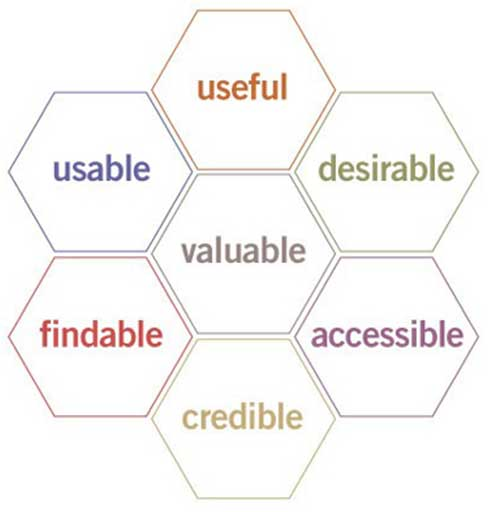

User Experience Basics
User experience (UX) focuses on having a deep understanding of users, what they need, what they value, their abilities, and also their limitations. It also takes into account the business goals and objectives of the group managing the project. UX best practices promote improving the quality of the user’s interaction with and perceptions of your product and any related services.
Factors that Influence UX
At the core of UX is ensuring that users find value in what you are providing to them. Peter Morville represents this through his User Experience Honeycomb .

He notes that in order for there to be a meaningful and valuable user experience, information must be:
-
Useful: Your content should be original and fulfill a need
-
Usable: Site must be easy to use
-
Desirable: Image, identity, brand, and other design elements are used to evoke emotion and appreciation
-
Findable: Content needs to be navigable and locatable onsite and offsite
-
Accessible: Content needs to be accessible to people with disabilities
-
Credible: Users must trust and believe what you tell them
Areas Related to Building the User Experience
UX is a growing field that is very much still being defined. Creating a successful user-centered design encompasses the principles of human-computer interaction (HCI) and goes further to include the following disciplines:
-
Project Management focuses on planning and organizing a project and its resources. This includes identifying and managing the lifecycle to be used, applying it to the user-centered design process, formulating the project team, and efficiently guiding the team through all phases until project completion.
-
User Research focuses on understanding user behaviors, needs, and motivations through observation techniques, task analysis, and other feedback methodologies.
-
Usability Evaluation focuses on how well users can learn and use a product to achieve their goals. It also refers to how satisfied users are with that process.
-
Information Architecture (IA) focuses on how information is organized, structured, and presented to users.
-
User Interface Design focuses on anticipating what users might need to do and ensuring that the interface has elements that are easy to access, understand, and use to facilitate those actions.
-
Interaction Design (IxD) focuses on creating engaging interactive systems with well thought out behaviors.
-
Visual Design focuses on ensuring an aesthetically pleasing interface that is in line with brand goals.
-
Content Strategy focuses on writing and curating useful content by planning the creation, delivery and governance behind it.
-
Accessibility focuses on how a disabled individual accesses or benefits from a site, system or application. Section 508 is the governing principal for accessibility.
-
Web Analytics focuses on the collection, reporting, and analysis of website data.
References